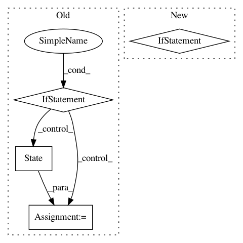

50b492c64a75e1523de058f7fd5d829b1b51f5c7,homeassistant/__init__.py,StateMachine,set,#StateMachine#Any#Any#Any#,451
Before Change
attributes = attributes or {}
with self._lock:
if entity_id in self._states:
old_state = self._states[entity_id]
if old_state.state != new_state or \
old_state.attributes != attributes:
state = self._states[entity_id] = \
State(entity_id, new_state, attributes)
self._bus.fire(EVENT_STATE_CHANGED,
{"entity_id": entity_id,
"old_state": old_state,
"new_state": state})
else:
// If state did not exist yet
self._states[entity_id] = State(entity_id, new_state,
attributes)
// pylint: disable=too-few-public-methods
class ServiceCall(object):
Represents a call to a service.
__slots__ = ["domain", "service", "data"]
After Change
event_data = {"entity_id": entity_id, "new_state": state}
if old_state:
event_data["old_state"] = old_state
self._bus.fire(EVENT_STATE_CHANGED, event_data)
// pylint: disable=too-few-public-methods
In pattern: SUPERPATTERN
Frequency: 3
Non-data size: 4
Instances
Project Name: home-assistant/home-assistant
Commit Name: 50b492c64a75e1523de058f7fd5d829b1b51f5c7
Time: 2014-04-29
Author: Paulus@PaulusSchoutsen.nl
File Name: homeassistant/__init__.py
Class Name: StateMachine
Method Name: set
Project Name: david-abel/simple_rl
Commit Name: 23f5b5d1bc147991f7f0d83992e4b8b96d9f1eca
Time: 2018-08-08
Author: david_abel@brown.edu
File Name: simple_rl/abstraction/state_abs/StateAbstractionClass.py
Class Name: StateAbstraction
Method Name: phi
Project Name: pgmpy/pgmpy
Commit Name: 2dcd9b48541b62d99c79f804973676dcd6bd377a
Time: 2015-08-15
Author: pratyaksh@me.com
File Name: pgmpy/models/MarkovChain.py
Class Name: MarkovChain
Method Name: set_start_state